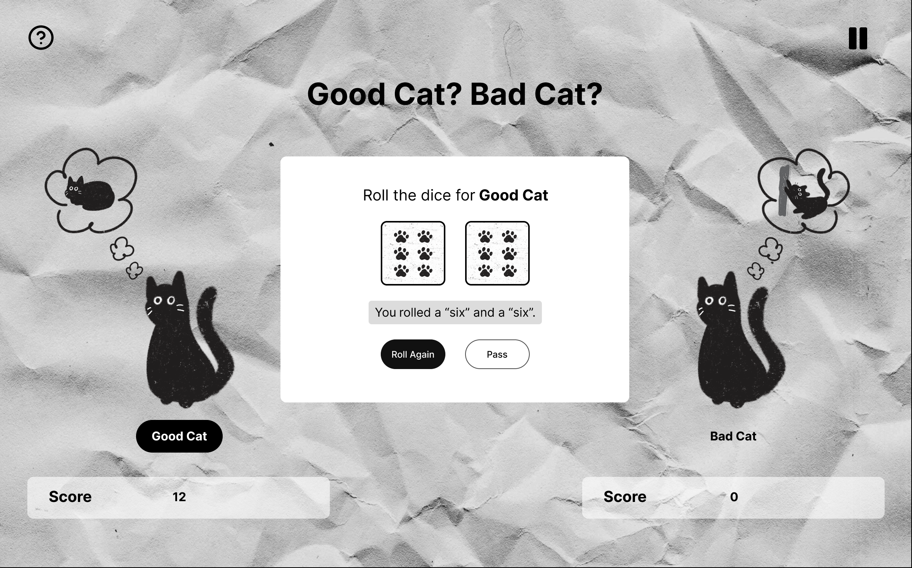
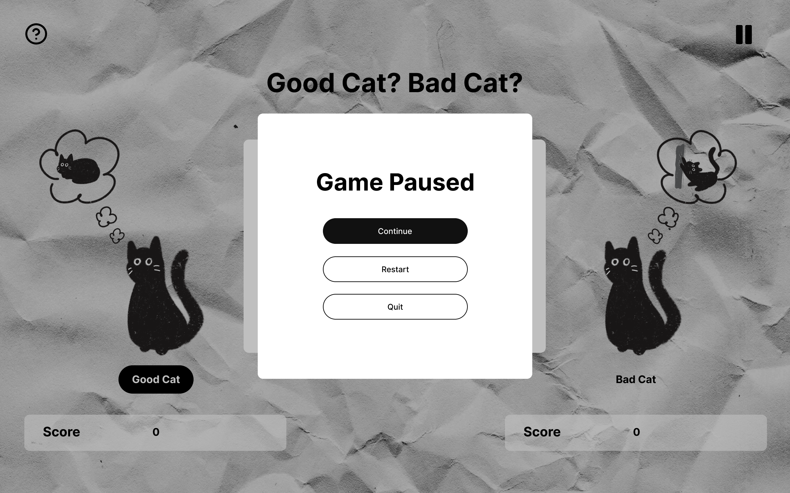

process work
UI/UX
For the final project process, I created a prototype on Figma that showcases the improvement of the UX/UI.
Looking at the image above, I wanted to improve the user experience of players that are new or needed a reminder for the instructions of the game. I added a help button on the top left corner that players could access anytime if they wish to while playing the game.
Looking at this second image above, I improved the navigation of the game. I added an option for players to pause the game and access a menu where they could continue, restart, or quit the game anytime they wanted. Previously, this option wasn't available, and players had to play through the game entirely.
Looking at the last photo above, I improved the readability of the score. I made it such that players can quickly glance and see their scores instead of having to read a sentence.